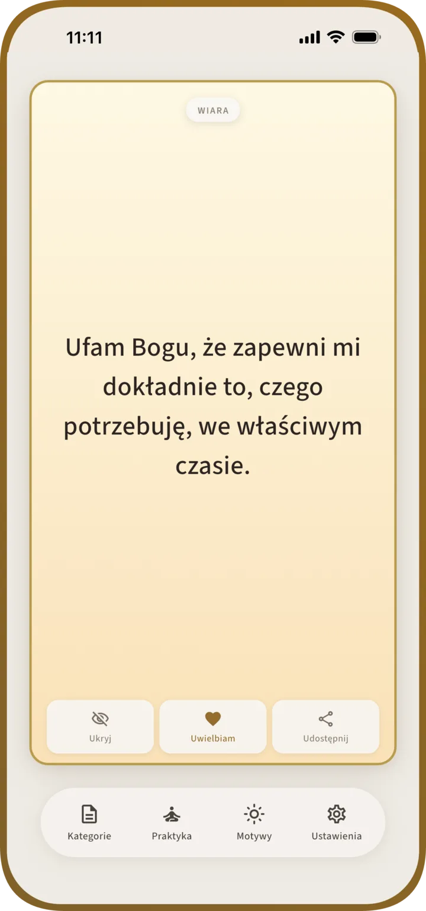
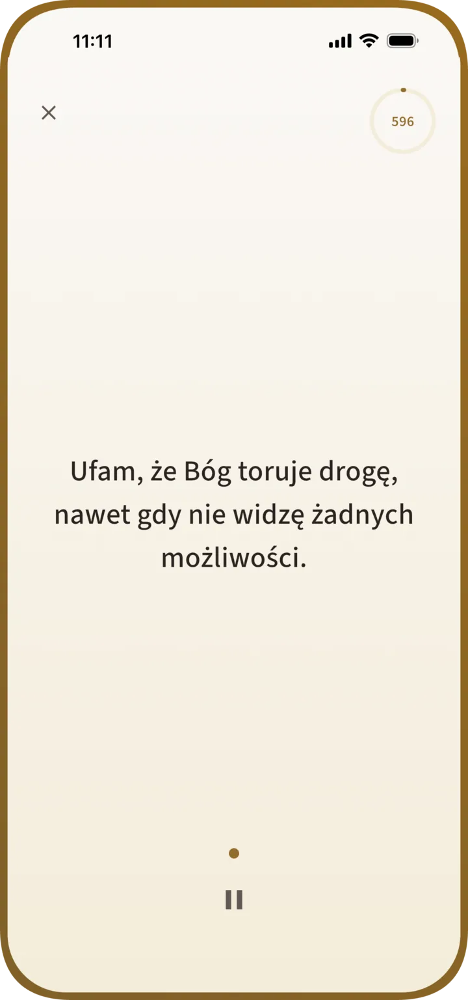
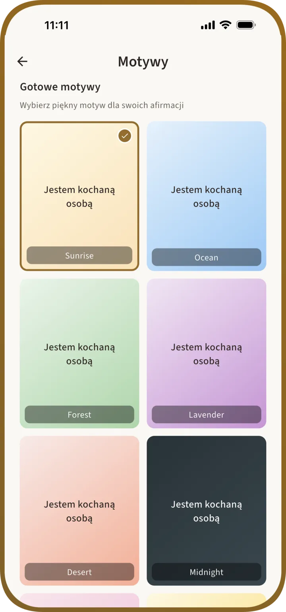

Manna.
Zbieraj Swoją Codzienną Prawdę.
Włącz afirmacje biblijne do modlitwy i codziennych rozważań. Zachowaj blisko Bożą prawdę, gdy potrzebujesz wiary, nadziei, pokoju lub siły.

Praktyka
Czym są afirmacje chrześcijańskie?
Afirmacje chrześcijańskie pomagają wracać do Słowa Bożego, gdy dzień staje się pełen napięcia lub niepewności. Manna łączy afirmacje biblijne z krótką praktyką skupioną na wierze, nadziei, pokoju i tożsamości w Chrystusie.
„Jestem cudownie stworzony.”
Psalm 139:14„Wszystko mogę w Tym, który mnie umacnia.”
Filipian 4:13„Bóg nie dał nam ducha lęku, lecz mocy, miłości i rozsądku.”
2 Tymoteusza 1:7Każde zdanie opiera się na prawdzie biblijnej. Afirmacje biblijne dają punkt oparcia, gdy lęk, żałoba, presja lub wątpliwości odsuwają Boże obietnice na dalszy plan.
„Nie dostosowujcie się do tego świata, lecz przemieniajcie się przez odnawianie umysłu.”
Rzymian 12:2
Aplikacja
Boże obietnice, pięknie przedstawione.
Ustaw przypomnienia w porach, które pasują do Twojego planu dnia.
Codzienne afirmacje biblijne
Wiara na każdy etap

Praktyka bez pośpiechu

Motywy
Funkcje
Codzienna praktyka, nie kolejna aplikacja.
Codzienne afirmacje biblijne
Zbuduj prosty rytm.
Wiara na każdy etap
Każde zdanie opiera się na prawdzie biblijnej.
Praktyka
Medytacja chrześcijańska nad Słowem Bożym znajduje swoje miejsce w trybie praktyki.
Motywy
Dopasuj Manna do siebie.
Przypomnienia
Ustaw przypomnienia w porach, które pasują do Twojego planu dnia.
Własne Afirmacje
Dopasuj Manna do siebie.
Dlaczego Manna
Świeża prawda każdego ranka.
Praktyka, która przemienia.
Zakorzenione w Piśmie
Każde zdanie opiera się na prawdzie biblijnej.
Odnawiaj Umysł Każdego Dnia
Zbuduj prosty rytm.
Buduj Niezachwianą Wiarę
Medytacja chrześcijańska nad Słowem Bożym znajduje swoje miejsce w trybie praktyki.
Piękna i Bez Rozpraszania
Jeśli znasz tę praktykę pod angielskim hasłem affirmations, w Manna znajdziesz jej chrześcijańską formę opartą na Biblii. Wbudowana biblioteka działa offline, nie wymaga konta, a osobiste treści pozostają na urządzeniu.
Twoja codzienna manna czeka.
Zbieraj Swoją Codzienną Prawdę.